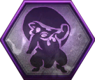
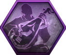
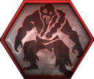
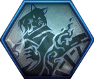
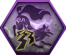
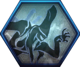

Location of Ethereal Soul Cores Table
| Soul Core Name | Location |
|---|---|
Gaki  |
The Fire God's Magatama (Soaring) - 1st shrine (R) |
Enki  |
The Fire God's Magatama (Soaring) - 1st shrine (R) |
Yoki  |
In the Eye of the Beholder (Afterglow) - 1st shrine (R) |
Gozuki  |
The Golden Castle (Dream) - last shrine, Picture Scroll |
Mezuki  |
Floor 1, The Golden Castle (Dream) - last shrine |
Ippon-Datara  |
The Search (Awakening) - 1st shrine (R) |
Kappa  |
Floor 14 (R), Mountain of the Dark Lord (Twilight) - last shrine (R) |
Nurikabe  |
The Viper & the Butterfly (Soaring) - 1st shrine |
|
Mujina  |
|
Enenra  |
Picture Scroll |
Nure-Onna  |
The Fire God's Magatama (Soaring) - 1st Shrine (R) |
Aberrant Soldier  |
Eternal Rivals (The Tengu's Disciple) - 2nd shrine (R), Floor 24 (R) |
|
Toxic Slime |
An Error in Calculation (Soaring) - 1st Shrine |
|
Yatsu-no-Kami |
Calamity's Pulse (Afterglow) |
Yamanba  |
A Way Out (Shadow) - Last Shrine (R) |
One-Eyed Oni  |
A Way Out (Last Shrine) |
|
Karasu Tengu |
The High-spirited Demon (Twilight) - 1st shrine (R) |
Waira  |
Floor 3 (R) |
Karakasa Umbrella  |
Battle at the Temple (The First Samurai) - 1st shrine (R) |
Lesser Umi-Bozu  |
Floor 15(R), A Strong Bond (Shadow) - Last Shrine |
|
Skeleton Warrior |
The Fire God's Magatama (Soaring) - 1st Shrine(R), Floor 3 (R) |
Kamaitachi  |
Floor 13 |
|
Koroka |
Prevading Waters, Ruin Draws Near (Last Shrine), Floor 15, The Frenzied Blaze (Dawn) - 2nd shrine (R) |
Dweller  |
Traces of a Raging Blaze (Twilight Mission) - Last Shrine, Floor 20 (R), The Hollow Fortress (Soaring) - 2nd Shrine (R) |
Rokurokubi  |
Mountain of the Dark Lord (Twilight Mission) - 2nd Shrine (R), Floor 23, Floor 24 (R) |
Mitsume Yazura  |
Floor 22 (R) |
|
Biwa Boku-Boku  |
The High Spirited Demon (Twilight Mission) - 2nd Shrine, Floor 15 (R) |
Flying Bolt  |
The Hollow Fortress (Soaring) - 2nd Shrine (R) |
Namahage  |
The Cursed Castle Ruins (Twilight Mission) (R), Floor 106 (R) |
Tesso  |
Floor 20 (R) |
Ubume  |
The Scented Letter (Dream) - 1st shrine |
|
Onyudo  |
Ruin Draws Near (Last Shrine), Eternal Rivals (The Tengu's Disciple) - 2nd shrine (R), The Beast Born of Smoke and Flames (Awakening) - 1st Shrine (R) |
Wheelmonk  |
Floor 24 (R) |
|
Kasha  |
Floor 21, Floor 79, Picture Scroll |
Ryomen Sukuna  |
Picture Scroll |
Daidara Bocchi  |
Picture Scroll |
Shuten Doji  |
The Revelry Ends (Darkness in the Capital) |
Magatsu Warrior  |
The Golden Castle - Last Shrine (R) |
|
Lady Osakabe |
Picture Scroll |
Otakemaru  |
Floor 30, Calamity's Pulse (Afterglow) |
Nue  |
Floor 37, Picture Scroll |
Kodama  |
The Search (Awakening) [Drop Purified Soul Cores] |
Infernal Oni-Bi  |
Abduction, Hidetatsu's Dying Wish (Soaring) - Last Shrine (R) |
Maelstorm Oni-Bi  |
Abduction (Dawn) |
Thunderstorm Oni-Bi  |
Abduction, Prevading Waters (2nd Shrine) (R) |
Mortal Soul Cores    |
Brother's Blade (Shadow), Triple Magara Picture Scroll |
Kiryoki  |
The Bewitching Tower (R), Floor 4, Words of Respite (The First Samurai) - 1st Shrine |
Bakegani  |
The Viper's Sanctum (Awakening) - 2nd Shrine (R), Floor 15 (R) |
Seto Taisho  |
Soul of the Warrior Monk (The Tengu's Disciple), Picture Scroll |
Nuppeppo  |
Floor 8, Floor 16, A Way Out (Shadow) - Last Shrine (R) |
Uminyudo  |
Picture Scroll |
|
Oboroguruma |
Floor 15 (R), Prevading Waters (Dawn) - 2nd Shrine |
Lightning Gods of Yomi  |
Floor 66, Picture Scroll |
|
Hellish Hag |
The Village of the Cursed Blossoms (Awakening) - 1st Shrine (R), Floor 10 (R) |
Tsuchigumo  |
Picture Scroll |
Yasha  |
The Frenzied Blaze (Dawn) - 2nd shrine (R) |
Underworld Soldier  |
Mountain of the Dark Lord (Twilight Mission) - 2nd Shrine (R), Eternal Rivals (The Tengu's Disciple) - 2nd Shrine (R), Floor 22 (R) |
Infernal Fox  |
|
Maelstrom Fox  |
Floor 10 (R), Floor 20 (R) |
|
Thunderstorm Fox  |
The Golden Castle (Dream) - last Shrine (R), Floor 12 (R), Floor 2 (R) |
Harinobo  |
The Viper's Sanctum (Awakening) - 2nd Shrine (R), Floor 76 (R) |
Ancient Nyotengu  |
The Alluring Ancient (The First Samurai) |
|
Tate Eboshi  |
|
Itsumade  |
The Violet Cherry Blossoms (Twilight Mission), Floor 63, Floor 11, Words of Respite (The First Samurai) - 1st Shrine |
Konaki-Jiji  |
The Violet Cherry Blossoms (Twilight Mission) - 1st Shrine, Floor 26 (R) |
Kinki  |
Floor 6 |
Fuki  |
Bird In A Cage (Shadow) - 2nd Shrine, Floor 94 (R), Floor 94 (R) (100 % Drop Rate) |
Suiki  |
The High-Spirited Demon (Twilight Mission) - 2nd Shrine (R), The Violet Cherry Blossoms (Twilight Mission) - Last Shrine (R) |
Ongyoki  |
A Song to Calm the Storm (The Tengu's Disciple) - 2nd Shrine (R), Floor 76 |
Nightmare Bringer  |
A Familiar Glow (The First Samurai) |